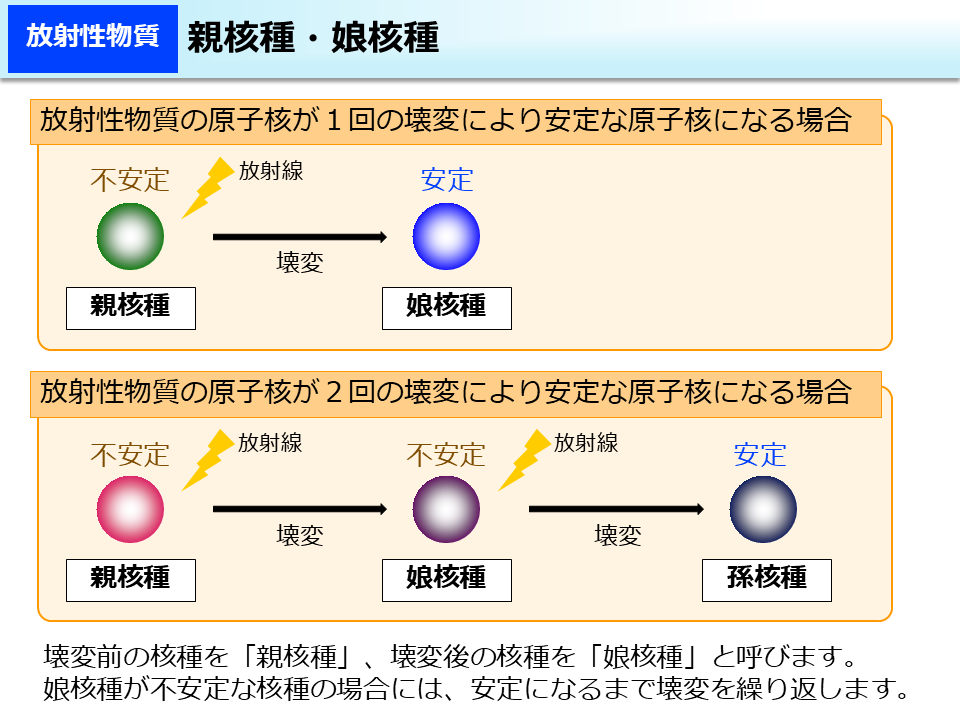

2. 物理学の事例#
到達目標
指数的減衰を示す現象を数理的に理解する．
準備
anacondaを使用し，jupyter labを起動する．
Documents（書類）/mathematical_studiesフォルダをダブルクリックで開き+をクリックして新しいファイルを作成する．ファイル名を
2_{学籍番号}_{氏名}.ipynbに変更する．例：2_SI25999_香川渓一郎.ipynb
2.1. 前回の内容#
数理モデルは次の3要素から構成される．
変数：対象となる現象の状態・性質・量などを数字やラベルで表したもの．
数理構造：変数が従うルールを数学的に表現したもの．数理モデルの骨格．
パラメタ：数理モデルの表現可能性を担う定数．これを調節することでデータを説明する．
人口増加の数理モデルは次の微分方程式によって表される．
ここに，\(N(t)\) は各時刻 \(t\) における人口を表す変数であり，\(r\) は増加率を表すパラメタで \(r > 0\) だった．
2.2. 放射性崩壊#
2.2.1. 歴史#
1858年：プリュッカー (Julius Plücker) による陰極線の発見
真空管（クルックス管）に電気を通すと，陽極の背後のガラスが緑色に発光する現象が発見された．
陰極から何かしらの放射線が出ていることを示唆しており，これを陰極線と呼んだ．
1895年：レントゲン (Wilhelm Conrad Röntgen) によるX線の発見
真空管にアルミ箔の窓をつけると，陰極線が真空管の外に出ることが知られていた．
真空管の外に出た陰極線は2メートル離れた蛍光板を光らせることを発見した．
真空管を黒い紙で覆い，蛍光板との間に本，木片，ガラスなどを挟んでも蛍光板は光ることから，これは未知の放射線であるとしX線と名付けた．
この発見によりレントゲンは1901年の第1回ノーベル物理学賞を受賞する．

Author: D-Kuru/Wikimedia Commons, Licence: CC-BY-SA-3.0-ATより
{kind=link}
1896年：ベクレル (Antoine Henri Becquerel) による放射能の発見
蛍光物質として知られていたウラン化合物に日光を当てればX線が放射されると考え，それを実験により確認した．
しかしながら，日光を当てなくてもX線より強い放射線が放出されていることを偶然発見した．
このことから，ウラン化合物が放射能（放射線を出す能力）を持っていることを発見する．
ベクレルの名前は放射能の強さを表す単位に残る．
2.2.2. 放射性崩壊の原理#

環境省「放射線による健康影響等に関する統一的な基礎資料」より

環境省「放射線による健康影響等に関する統一的な基礎資料」より
ここでは不安定核種が直接安定核種に変化する場合を扱う．
2.2.3. 数理モデルの構築#
単位時間あたりに放射性崩壊する確率（崩壊定数）を \(\lambda > 0\) とし，時刻 \(t\) での放射性物質の数を \(N(t)\) とおく．
現在時刻を \(t=0\) として，現在時刻における放射性物質の数が \(N_0\) と分かっているものとする．
このとき，任意の時刻 \(t\) での放射性物質の数 \(N(t)\) と，微小時間 \(\varepsilon\) 後の放射性物質の数 \(N(t+\varepsilon)\) の関係は次のように求められる．
これを式変形すれば
となる． ここで \(\varepsilon \to 0\) の極限を取れば，次の微分方程式を得る．
これを解くと（この関係式を満たす \(N(t)\) を求めると）
2.2.4. 半減期#
放射性崩壊によって粒子数が半分になるまでにかかる時間を半減期と呼ぶ． 半減期によって人体に及ぼす影響を評価することができる．
半減期を \(T\) とするとき，次の関係を満たす \(T\) を求めれば良い．
従って
と求まる．
2.2.5. グラフのプロット#
準備
import numpy as np
import matplotlib.pyplot as plt
from matplotlib import rcParams
rcParams['font.family'] = 'Hiragino Sans'
変数の準備
# 初期値と崩壊定数を定める
N_0 = 10000
r = 0.01
プロット
# FigureとAxesを生成する
fig, ax = plt.subplots(figsize=(5, 3))
# 時間軸を定める
t = np.linspace(0, 1, 100)
# 横軸を時間，縦軸をN(t)としてプロットする
ax.plot(t, N_0 * np.exp(-r * t))
ax.set_xlabel('時刻'); ax.set_ylabel('放射性物質の数')
# Figureを保存する（相対パスを指定）
fig.savefig("./2_decay.png")
Note
演習1
トリチウムの崩壊定数は \(\lambda = 1.8 \times 10^{-9} \mathrm{[s^{-1}]}\) であり，初期値の粒子数は \(5.6 \times 10^{12}\) 個とする． このとき，半減期は何秒（何年）になるか．
※ \(5.6 \times 10^{12}\) 個は世界保健機関 (WHO) による飲料水1リットルの水質の基準値．
このときのグラフを作成せよ．
2.3. 冷却現象#
2.3.1. 歴史#
17世紀末：ニュートン (Isaac Newton) による冷却の法則の発見[3]
熱い液体の温度が時間とともにどのように下がるかを測定した．
液体が冷える速さは、周囲との温度差が大きいほど早く，その速さは液体と周囲の温度との温度差に比例することを見出した．

Public Domain / Wikimedia Commons
{kind=link}
この法則は、日常的な冷却現象だけでなく、熱伝達・気象・生体熱交換など多くの分野で応用されている。
2.3.2. 冷却現象の原理#
伝熱の3つの形態：
伝導 (conduction)：固体内での熱の移動
対流 (convection)：空気や水の流れによる熱輸送
放射 (radiation)：赤外線などの電磁波による熱放出
ニュートンの冷却則は，対流による放熱が支配的な場合に成立する近似式である．実際，ニュートンは風を当てながら温度の低下を調べた．
2.3.3. 数理モデルの構築#
時刻 \(t\) における物体の温度を \(T(t)\)，周囲の温度を \(T_{\mathrm{env}}\) とする．
実験的事実として温度変化の速さは温度差に比例することが知られている．
現在時刻を \(t=0\) として，現在時刻における物体の温度が \(T_0 > T_{\mathrm{env}}\) と分かっているものとする．
温度の下がり方を決める定数（冷却定数）を \(k > 0\) とする．
このとき
これを解くと（この関係式を満たす \(T(t)\) を求めると）
指数関数をとると、
2.3.4. 特徴#
時間が経つと物体の温度は周囲の温度に漸近する（\(\lim_{t\to 0} T(t) = T_{\mathrm{env}}\)）．
物体と周囲との温度差は指数関数的に減少する：
放射性崩壊と同様，「変化率が現在値に比例」する指数的減衰モデルである．
2.3.5. グラフのプロット#
準備
import numpy as np
import matplotlib.pyplot as plt
from matplotlib import rcParams
rcParams['font.family'] = 'Hiragino Sans'
変数の準備
# 初期温度，環境温度，冷却定数を設定
T_env = 25 # [℃]
T_0 = 90 # [℃]
k1 = 0.01 # [1/s]
k2 = 0.02 # [1/s]
プロット
# FigureとAxesを生成
fig, ax = plt.subplots(figsize=(5,3))
# 時間軸
t = np.linspace(0, 1000, 100)
# 温度の時間変化を計算
T1 = T_env + (T_0 - T_env) * np.exp(-k1 * t)
T2 = T_env + (T_0 - T_env) * np.exp(-k2 * t)
# プロット
ax.plot(t, T1, label=f"温度変化 (k={k1})")
ax.plot(t, T2, label=f"温度変化 (k={k2})")
ax.set_xlabel("時間 [s]")
ax.set_ylabel("温度 [${}^\circ\mathrm{C}$]")
ax.legend()
fig.savefig("./2_cooling.png")
Note
演習2
初期温度 \(T_0 = 90[{}^\circ\mathrm{C}]\)，環境温度 \(T_{\mathrm{env}} = 25[{}^\circ\mathrm{C}]\) とする．1000秒後に温度が \(60[{}^\circ\mathrm{C}]\) になったとき，冷却定数 \(k\) の値を求めよ．
そのときのパラメタ設定を用いて2000秒後の温度を求めよ．
異なる冷却定数 \(k\) の値（例：0.008, 0.005）でグラフを重ね，冷却速度の違いを比較せよ．
2.4. 補足：指数的減衰との共通性#
現象 |
方程式 |
解 |
|---|---|---|
放射性崩壊 |
\(\frac{dN}{dt} = -\lambda N(t)\) |
\(N(t) = N_0 e^{-\lambda t}\) |
冷却現象 |
\(\frac{dT}{dt} = -k(T - T_{\mathrm{env}})\) |
\(T(t) = T_{\mathrm{env}} + (T_0 - T_{\mathrm{env}})e^{-kt}\) |
共通点：変化率が「現在値（または現在の温度差）」に比例 → 指数関数的減衰。
違い：冷却現象では環境との「温度差」が減衰する．
2.5. まとめ#
本日作成したipynbファイルに追記する形で次の課題に回答し，WebClassの第2回課題から提出せよ．
Note
復習
(1) 本日学んだことを3つ箇条書きで述べよ．
2.6. 参考文献#
“Scala graduum Caloris (A Scale of the Degrees of Heat)”, Philosophical Transactions, No. 270, pp. 824–829, (April 1701).